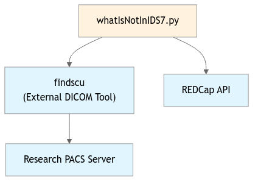
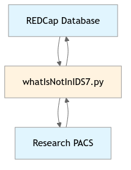

whatIsNotInIDS7.py
This script cleans up a REDCap database by removing records that no longer exist in the research PACS system. It queries the REDCap project “whatIsInIDS7” to retrieve all stored records, then validates each record’s existence in the research PACS using DICOM findscu commands. Records that are not found in the PACS (indicated by zero SeriesInstanceUID occurrences) are marked for deletion and optionally removed from REDCap in batches of 200.
Related Files
Data Flow Diagram
Data Paths
Input Source:
REDCapAPI
Output Destination:
REDCapAPI
whatIsNotInIDS7.py
There is no docstring.